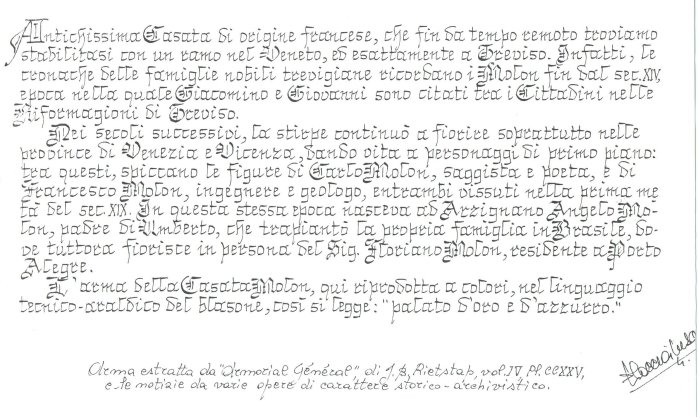

Origens Linguísticas e Históricas
Sob o ponto de vista lingüístico, o nome de família Molon se constitui num vocábulo composto por dois elementos distintos: um radical representado por uma raiz que pode ter duas interpretações, como será explanado abaixo, mais a desinência latina - onis, - one que , no sobrenome comparece sob a forma final truncada, - on. Convém analisar primeiramente esta terminação, porquanto é esta que determina o significado final do sobrenome; por outro lado, sua análise é menos complexa e mais breve.
A desinência latina - onis, - one não é um sufixo propriamente dito, mas uma terminação latina dos nomes terminados em - o, como Cicero, Ciceronis, Naso, Nasonis, Maro, Maronis, Varro, Varronis, Otto, Ottonis, Leo, Leonis, etc. esta terminação era utilizada, no latin clássico, na declinação destes nomes e também vocábulos no contexto sintático da fala ou da escrita. Esta desinência foi usada, no latim medieval, indistintamente em nomes masculinos, alterando até a terminação de alguns deles, como Marcus que era dito também Marconis, Marcone.
Convém salientar que esta desinência, no latim popular medieval, assumiu também a função de aumentativo. Se Molon representa originalmente esta acepção, este deve ser interpretado como indicativo de cidadão assim chamado por ser de estatura avantajada ou por ser personagem proeminente na comunidade. Este fato, porém, é difícil de determinar por falta de documentação histórica explícita a respeito. Por outro lado, em muitos nomes, esta terminação possuía uma simples função distintiva de outro parecido, como Alberton era simples diferenciativo de Albertin, Albertino, Albertot, Albertazzo, etc. A redução desta desinência para -on é fenômeno típico dos falares regionais do norte da Itália.
O primeiro elemento que concorre na ofirmação do sobrenome Molon é de interpretação simples, mas discutida pelos estudiosos que se dividem entre duas hipóteses ou teoriais histórico-lingüísticas. Certamente o sobrenome se originou de um dos radicais invocados por essas teorias. Difícil é definir de qual deles, embora a maioria dos estudiosos defendam a primeira das hipóteses apresentadas. Apesar disso, não se pode descartar a outra, uma vez que é lingüisticamente viável e plausível, embora não atestada por textos medievais ou antigos. Ela serviria, porém, para explicar a presença do sobrenome em outras áreas geográficas, que são as setentrionais.
A primeira teoria invoca o vocábulo grego mélon, melão, na verdade, redução do vocábulo melopépon que designava a mesma fruta desta planta das cucurbitáceas, originária da África e da Ásia tropical. O termo grefo oi transposto para io latim sob a forma melo, melonis, mencionado por vários escritores. Dentre eles, basta relembrar Caius Plinius Secundus (23-79 c.C) que, em sua obra Naturalis História (19,67), cita o melão como melopepon e melo. O agrônomo Trutilius Raurus Aemilianus Palladius (séc. IV d.C.), em seus Scripta (4,9) descreve a fruta, bem como seu largo consumo, mencionando-a sempre como melo, melonis. Antes dele, o escritor Arnobius (II e III séc. d.C.) prefere a forma encurtada melo, melonis, como aparece em sua obra Disputationes adversus Nationes (2,59).
O termo latino se fixou no italiano em melone desde o surgimento do idioma no século X. Nos falares regionais setentrionais, porém , o vocábulo tomou a forma melon. A supressão da vogal final átona dos termos masculinos é fnômeno típico dos falares regionais ou dialetos do norte. O problema é comprovar a passagem da forma melon para molon. Não se tem notício de textos medievais que o comprovem, mesmo porque a transcrição dos textos era mormente feita em latim até o século XVI, fossem eles textos legais, contratos, crônicas ou notícias. Era praxe escrever em latim, mesmo porque o italiano e os falares regionais careciam de uma grafia unitária.
|  |
A prova de que molon correspondia a melon nos falares regionais setentrionais se tem através da própria fala, registrada em vocabulários e dicionários desde o século XVII. A tradição dialetal continua ainda hoje em certas áreas do norte, mormente no Vêneto, na Lambardia e no Piemonte. Os falares ou dialetos das duas últimas Regiões são menos convincentes para comprovar o fato, porquanto são de forte influência francesa e a vogal da prétônica do vocabulário melon é quase impronunciada. Mais convincente , portanto, é a subsistência do vocábulo nos falres vênetos, tanto sob a forma melon em algumas áreas bem definidas, quanto sob a forma molon em outras áreas igualmente bem determinadas. Convém, pois, recorrer aos melhores estudiosos do assunto para ressaltar que molon é um a variante regional do norte que subsiste com o termo mais original melon. |
{kind=link}
Um dos mais importantes estudiosos dos sobrenomes vênetos e um dos primeiros a conduzir esses estudos com seriedade e baseado em textos medievais, Dante Olivieri, em seu estudo intitulado I cognomi della Venezia Euganea, publicado no volume Onomastica (p.117-272), impresso em Genebra em 1923, no verbete Molon diz simplesmente que se eqüivale a melone (p.216). Por outro lado, um dos mais recentes estudiosos de onomástica, Dario Soranzo, em seu livro Cognomi dei Veneti (publicação da Finegil Editoriale, Padova, 1996), afirma que o sobrenome Molon reflete o termo vêneto molon para designar o melone que vem do grego mélin (p.138).
Consultando dicionários dos falares setentrionais, de modo particular os vênetos, lombardos e piemonteses, deve-se ressaltar que são poucos os que registram o vocábulo molon, enquanto doso eles registram melon. De fato, o Dizionario etimologico veneto italiano de G.T. Turato e Dino Durante, publicado em 1975, não menciona a variante molon de melon. De igual modo, não se encontra esta variante no Vocabolario veneto italiano de Sandro Zanotto, publicado em 1954, no mais antigo Dizionario vicentino italiano de Giulio Nazari, publicado em 1875, como também no grande e célebre Dizionario del dialetto veneziano de Giuseppe Boerio, publicado em 1856. A razão pela qual não se registra o termo nesses dicionários é desconhecida e até estranha para os que tratam de falares vicentinos e paduanos, uma vez que o sobrenome é amplamente difundido nos territórios em que subsistem estes falares.
Marcello Bondardo, porém, em seu livro Il Dialetto Veronese, publicado em 1972, afirma que molon é uma variante de melon. a melhor resposta, porém, é fornecida por Angelico Pratiem seu Etimologie Venete, publicado em 1968 pelo Istituto per la Collaborazione Culturale, Venezia.
Vale a pena transcrever algumas passagens do que ele escreve a respeito, uma vez que é considerado um dos maiores etimólogos que o Vêneto já produziu. Angelico Prati abre o verbete molon remetendo a melon. Neste ele iguala as formas usuais melon e molon, explicando que molon é termo típico dos territórios vicentino e paduano, mas invadem também consideráveis áreas do território veronês. Escreve ainda que melonaro e molonaro é o termo usado para indicar o vendedor de melões e melancias, enquanto que melonara, molonara, designa área ou terreno cultivado com melões e melancias. Destaca ainda que nos territórios veneziano, trevisano e belunês não subsistem as variantes molon, molonara, molonaro.
Ante o assim exposto, o sobrenome Molon repete a denominação da fruta descrita e pode ser tomado também como um encurtamento de molonato. De qualquer modo, o sobrenome evoca uma atividade exercida, uma profissão, isto é, a de cultivador e mercador de melões e outras cucurbitáceas. Este nome familiar relembra tanto o cultivador, quanto o vendedor ambulante, figura muito tradicional na Europa medieval e pós-medieval, não só de frutas, mas de todo objeto, gênero alimentício, tecidos, móveis, quase sempre fruto de seu trabalho agrícola e artesanal.
A segunda teoria recorre a outra raiz para explicar as origens e decorrente significado deste sobrenome. Embora a maioria dos estudiosos acate a explicação acima, alguns preferem recorrer a uma segunda hipótese, face à presença deste sobrenome em outras áreas, fora do arco setentrional. Embora viável e plausível, a teoria é aceita com certa reserva.
Os defensores desta teoria recorrem ao termo latino mola que se origina do grego múle, designativo da mó, a pedra redonda que triturava os cereais na fabricação da farinha. A técnica de triturar os cereais, entre os antigos, consistia em girar uma grande mó sobre outra fixa. Os latinos usavam a expressão molam versare ( virar, girar a mó), trabalho executado manualmente pelos escravos ou através da força dos animais atrelados, como consta no livro SaTirae (8,7) do escritor romano Decimus Junius Juvenalis (60-140 d.C.). Do termo mola, se forma molarius que designava o escravo ou indivíduo que girava a mó, como escrevem autores latinos, entre os quais Marcus Porcius Cato (III-II séc. a.C.) na obra De Agricultura (11,4) e Marcus Terentius Varro Reatinus (116-27 a.C.) no livro Res Rusticae (1,19). Entre os latinos, portanto, mola e molarius se referiam mais especificamente às mós de moinhos para trituração de cereais e aos escravos que giravam estas mós.
Na Idade Média, surge a profissão de amolar ou afiar objetos cortantes, como facas, espadas, gadanhos, foices, foicinhas, machados, lanças e uma infinidade de outros instrumentos agrícolas, armas e utensílios de uso doméstico. Ora, para o exercício desta profissão usava-se também uma mola ou mó que era girada manualmente através de uma manivela afixada a um eixo introduzido no centro da mó. Esta pedra do tipo pomes era a preferida na atividade de afiar instrumentos e utensílios. Neste mesmo período medieval, o termo latino molarius perde sua relação com a moagem de cereais e passa a indicar especificamente o afiador, o artesão que reconstitui o fio dos instrumentos. Já no tardo do latim dos séculos V e VI se utilizava a palavra molaria com o sentido de locus unde molae extrahuntur (local onde se extraem mós). Utilizava-se, outrossim, a expressão saxa molaria para designar as pedras para amolar, afiar. Houve, portanto, uma transferência de significado nos termos latinos originais. Em outras palavras, enquanto o moageiro era indicado com o novo termo molendinarius ou molinarius, o antigo vocábulo molarius ficou como indicativo exclusivo do amolador , do afiador de objetos.
Esta nova colocação terminológica tem respaldo na denominação da cidade de Molare, situada na Província de Alessàndria no Piemonte. A origem do nome desta cidade provém da quantidade de locais nos seus arredores em que se extraía esta pedra de amolar. No ano de 1284, a povoação é indicada com o nome de Molariis e em 1368 com o de Molariarum Civitas (cidade das pedras de amolar ou, segundo outros, citados dos amoladores, dos afiadores), em razão exatamente da grane atividade extrativa desse tipo de pedra. Por outro lado, nos falares dialetais do norte, surgiu o verbo molar com o significado de afiar, amolar. A profissão de molarius se difundiu em toda a Itália nesse período medieval. Enquanto no norte se usava este termo específico derivado de mola, ou seja, molarius, no centro-sul se preferia usar outro, derivado de rota(roda), isto é , arrotinus. Este termo prevaleceu no italiano oficial; ainda hoje se designa de arrotino o amolador de objetos metálicos, o afiador de instrumentos e utensílios cortantes.
Na Itália setentrional, o termo arrotino séo se utiliza hoje no uso do idioma nacional. Nos falares dialetais, ainda se usa o termo latino molarius que, através dos séculos, assumiu variadas formas como molaro, molar, moler. Mesmo na Região do Vêneto, prevalecem estes termos para se referir ao afiador. Em restritas áreas, porém, é chamado também de moleta, confundindo-se com moler ou molaro. O significado, portanto, so sobrenome Molon estaria ligado diretamente ao exercício da profissão de afiador, de amolador de objetos, do artesão que se utilizava da mola para afiar instrumentos e utensílios cortantes.
Resta estabelecer se o termo molon era usado realmente neste sentido; trata-se de suposição, baseada nas raízes lexicais do termo. Na Região do Vêneto, o termo moleta assume também o significado popular de vendedor ambulante de mós paras afiar e este vendedor ambulante poderia ter sido chamado igualmente de molon. O sobrenome, portanto, pode ter surgido desta atividade do ancestral fundador deste tronco familiar, de qualquer maneira, é indicativo, também neste caso, de profissão, de arte e ofício. Nota-se, neste caso, que a desinência - on empresta ao sobrenome uma característica distintiva e não de aumentativo. Em outras palavras, prefere-se dizer Molon, para estabelecer uma distinção com Molin, Moleta, Moletta, Molino, todos sobrenomes com raízes próximas.
Concluindo esta parte histórica-linguística, convém salientar que o nome da família Molon se caracteriza como proveniente de uma arte e ofício e é, portanto, um sobrenome indicativo de atividade exercida, de uma profissão. Que esta fosse a de artesão prático em afiar e amolar objetos cortantes, que fosse a de vendedor ambulante de mós para a mesma finalidade, que fosse um cultivador de melões e melancias ou vendedor ambulante dos mesmos produtos, isso não nos é dado saber com precisão por absoluta falta de documentação histórica a respeito. O sobrenome certamente se originou de uma destas motivações; difícil é estabelecer de qual delas. Não havendo documentação que possibilite dirimir com segurança, prefere-se optar pela mais viável das duas interpretações, a primeira.